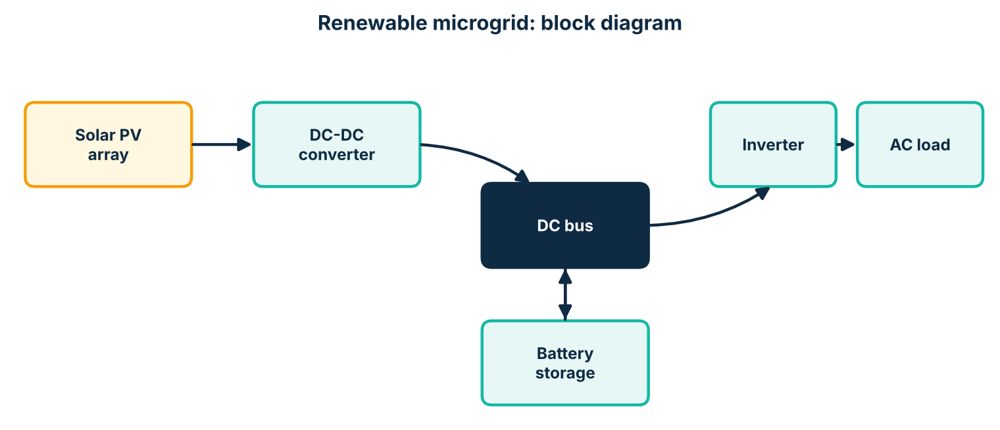

Overview
This project is a microgrid that supplies a load from sustainable energy sources. I designed the system and simulated it to check how the sources, storage and power electronics work together.
Objective
Supply a load reliably from renewable generation while keeping the DC bus voltage stable when sunlight and demand change.

Thought Process and Decisions
- Define the load and sources. I started from the load I wanted to supply, because every later sizing decision (PV array, battery, converters) depends on it.
- Choose the architecture. I used a common DC bus. Each source connects through its own converter, so sources can be added or changed without redesigning the rest of the system.
- Size generation and storage. The PV array is sized for the daily energy demand, and the battery is added to cover periods when generation is low and to smooth fast changes.
- Model and simulate. I built the converters, bus, battery and inverter as a simulation model so I could test the system before committing to any design.
- Evaluate and refine. I checked bus voltage, power balance and output quality, then adjusted component values where the results were not acceptable.
Results and Evidence
Screenshots, waveforms and test results for this project:


My Contribution
I was responsible for the design and simulation work described above: choosing the architecture, making the design decisions, building the model and evaluating the results.
Skills Demonstrated
- Solar PV design
- Battery storage integration
- Power converters
- MATLAB / Simulink